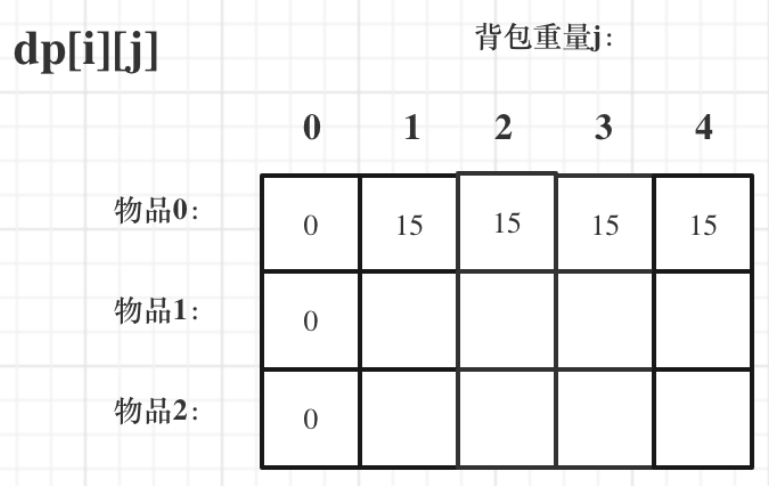
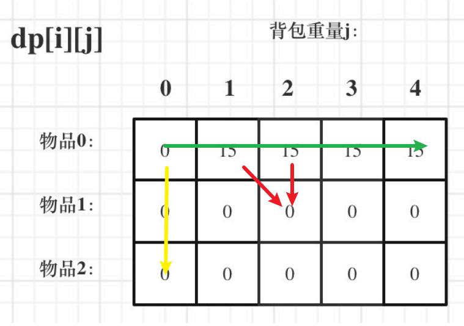

机试准备复习
内容为东copy西copy获得，均非原创，部分内容由AI支持获得
快速回顾必备知识
输入输出
getline()
当我们要求读取的字符串中间存在空格的时候，cin会读取不全整个字符串，这个时候，可以采用getline()函数来解决
注意1：使用getline()函数的时候，需要包含头文件<string>
注意2：getline()函数会读取一行，读取的字符串包括空格，遇到换行符结束
1 2 3 4 string s; getline(cin, s); // 输出读入的字符串 cout << s << endl;
getchar()
该函数会从缓存区中读出一个字符，经常被用于判断是否换行
1 2 3 4 5 6 7 8 char ch; ch = getchar(); // 输出读入的字符 cout << ch << endl; for(判断输出) if(getchar() == '\n') { break;
C++输出
for循环遍历
for auto的使用，一种基于范围的循环，它可以遍历容器中的每个元素。
auto : 创建容器元素的副本，不会改变原容器中的元素。auto& : 创建容器元素的引用，可以修改原容器中的元素。const auto& : 创建容器元素的常量引用，可以访问但不可以修改原容器中的元素。const auto : 创建容器元素的常量副本，不会改变也不能修改原容器中的元素。
1 2 3 4 5 vector<int> vec = {4, 3, 2, 1, 0}; for (auto iter : vec) { cout << iter << " "; } // 输出: 4 3 2 1 0
字符串的操作
1 2 3 4 5 string s1 = "nice to meet you~"; // 初始化一个空字符串 // 如果想要改变 string 对象中的值，必须把循环变量定义为引用类型。引用只是个别名，相当于对原始数据进行操作 for(auto &c : s1) c = toupper(c); cout << s1 << endl; // 输出
C++控制输出精度
1 2 3 4 5 6 7 8 9 10 11 12 13 14 15 float f1 = 3.1415926; float num = 3.14159; // 保留4位小数 printf("%3.4f\n", f1);//%3.4f表示输出的浮点数至少占3个字符宽度，并保留4位小数 printf("%.2fn", num); // 输出: "3.14" // 保留3位小数 printf("%6.3f\n", f1); // 保留2位小数 printf("%6.2f\n", f1); printf("%5d", 42); //将输出一个占5个字符宽度的整数42。在这种情况下，数字会默认右对齐，左侧填充空格 //对于需要以科学计数法输出的数字，可以使用%e占位符，并通过.后面的数字来指定小数点后的位数。 printf("%.3e", 12345.6789); //将输出1.235e+04。
字符串操作
查询字符串信息、索引
1 2 3 4 5 6 7 8 9 10 int main(void) { string s1 = "abc"; // 初始化一个字符串 cout << s1.empty() << endl; // s 为空返回 true，否则返回 false cout << s1.size() << endl; // 返回 s 中字符个数，不包含空字符 cout << s1.length() << endl; // 作用同上 cout << s1[1] << endl; // 字符串本质是字符数组 cout << s1[3] << endl; // 空字符还是存在的 return 0; }
拼接、比较等操作
1 2 3 4 s1+s2 // 返回 s1 和 s2 拼接后的结果。加号两边至少有一个 string 对象，不能都是字面值 s1 == s2 // 如果 s1 和 s2 中的元素完全相等则它们相等，区分大小写 s1 != s2 <, <=, >, >= // 利用字符的字典序进行比较，区分大小写
修改 string 的操作
在 pos 之前插入 args 指定的字符。pos是一个下标或者迭代器。
1 2 3 s.insert(pos, args) // 在 s 的位置 0 之前插入 s2 的拷贝 s.insert(0, s2)
删除从 pos 开始的 len 个字符。如果 len 省略，则删除 pos 开始的后面所有字符。返回一个指向 s 的引用。
将 s 中的字符替换为 args 指定的字符。返回一个指向 s 的引用。
将 args 追加到 s 。返回一个指向 s 的引用。args 不能是单引号字符，若是单个字符则必须用双引号表示。如，可以是 s.append(“A ” ) 但不能是 s.append(‘A ’ )
将 s 中范围为 range 内的字符替换为 args 指定的字符。range 或者是一个下标或长度，或者是一对指向 s 的迭代器。返回一个指向 s 的引用。
1 2 3 s.replace(range, args) // 从位置 3 开始，删除 6 个字符，并插入 "aaa".删除插入的字符数量不必相等 s.replace(3, 6, "aaa")
string 搜索操作
搜索操作返回指定字符出现的下标，如果未找到返回 npos
1 2 s.find(args) // 查找 s 中 args 第一次出现的位置 s.rfind(args) // 查找 s 中 args 最后一次出现的位置
string、char 型与数值的转换
将数值 val 转换为 string 。val 可以是任何算术类型（int、浮点型等）。
1 string s = to_string(val)
char 型转数值。注意传入的参数是指针类型，即要对字符取地址
1 2 3 4 5 atoi(c) // 函数原型 int atoi(const char *_Str) atol(c) atoll(c) atof(c)
字符串反转
使用 头文件中的 reverse() 方法：
1 2 3 string s2 = "12345"; // 初始化一个字符串 reverse(s2.begin(), s2.end()); // 反转 string 定义的字符串 s2 cout << s2 << endl; // 输出 54321
提取字串
使用 string ss = s.substr(pos, n) 。从索引 pos 开始，提取连续的 n 个字符，包括 pos 位置的字符。
STL
vector
queue
set
set里面的元素不重复 且有序
1 2 3 4 //头文件 #include<set> //初始化定义 set<int> s;
代码
复杂度
含义
s.begin()O(1)
返回 set 容器的第一个元素的地址（迭代器）
s.end()O(1)
返回 set 容器的最后一个元素的下一个地址（迭代器）
s.rbegin()O(1)
返回逆序迭代器，指向容器元素最后一个位置
s.rend()O(1)
返回逆序迭代器，指向容器第一个元素前面的位置
s.clear()O(N)
删除 set 容器中的所有元素，无返回值
s.empty()O(1)
判断 set 容器是否为空
s.insert(element)O(log N)
插入一个元素
s.size()O(1)
返回当前 set 容器中的元素个数
erase(iterator)O(log N)
删除定位器 iterator 指向的值
erase(first, second)——
删除定位器 first 和 second 之间的值
erase(key_value)O(log N)
删除键值 key_value 的值
查找
复杂度
含义
s.find(element)——
查找 set 中的某一元素，有则返回该元素对应的迭代器，无则返回结束迭代器
s.count(element)——
查找 set 中元素出现的个数，由于 set 中元素唯一，此函数相当于查询 element 是否出现
s.lower_bound(k)O(log N)
返回大于等于 k 的第一个元素的迭代器
s.upper_bound(k)O(log N)
返回大于 k 的第一个元素的迭代器
multiset ：元素可以重复，且元素有序
注意点一：方法函数基本和 set 一样，参考set即可。
遍历：
1 2 for(auto i : s) cout << i << endl;
map
映射类似于函数的对应关系，每个x对应一个y，而map是每个键对应一个值。这和python的字典类型非常相似。
6.1.2 初始化
1 2 3 4 //初始化定义 map<string, string> mp; map<string, int> mp; map<int, node> mp;//node是结构体类型
map特性：map会按照键的顺序从小到大自动排序，键的类型必须可以比较大小
代码
含义
复杂度
mp.find(key)返回键为 key 的映射的迭代器。若存在，返回对应迭代器；否则返回 mp.end()。
O(log N)
mp.erase(it)删除迭代器 it 对应的键和值
O(log N)
mp.erase(key)根据键 key 删除对应的键和值
O(log N)
mp.erase(first, last)删除迭代器区间 [first, last) 内的键和值
O(last − first)
mp.size()返回映射中键值对的数量
O(1)
mp.clear()清空 map 中的所有元素
O(N)
mp.insert({key, value})插入键值对
O(log N)
mp.empty()若 map 为空返回 true，否则返回 false
O(1)
mp.begin()返回指向第一个元素的迭代器
O(1)
mp.end()返回指向最后一个元素之后位置的迭代器
O(1)
mp.rbegin()返回指向最后一个元素的逆序迭代器
O(1)
mp.rend()返回指向第一个元素之前位置的逆序迭代器
O(1)
mp.count(key)返回键 key 出现的次数（0 或 1）
O(log N)
mp.lower_bound(key)返回指向键 ≥ key 的第一个元素的迭代器
O(log N)
mp.upper_bound(key)返回指向键 > key 的第一个元素的迭代器
O(log N)
1 2 3 4 5 6 7 8 9 map<int,int> mp; mp[1] = 2; mp[2] = 3; mp[3] = 4; auto it = mp.begin(); while(it != mp.end()) { cout << it->first << " " << it->second << "\n"; it ++; }
已学知识点
这里不能说掌握，只能说学过，也刷过对应的题目
二分
BFS
DFS
DP
高精度
判断素数
贪心
快速幂
排序算法（归并、快速）
部分题解
BFS适合找最短路径，DFS适合搜索全部的解
DP适用范围：大问题可以由小问题推出，大问题与小问题求解思路相同（最优子结构），且一旦f(n)确定，后续我们直接调用它的值就可以，而不用关心它是怎样过来的（无后效性）
海量数据
cin、cout 数据量级达到 1e5、1e6，会产生 IO 性能报错 TLE。简述，函数作用为设置标准 C++ 流是否与标准 C 流在每次输入/输出操作后同步
1 2 ios::sync_with_stdio(false); cin.tie(nullptr);
二分
分治思想就是把复杂问题、拆分成若干个相同的小问题，然后将问题逐步解决掉，合并到一起的过程。
1 2 3 4 5 6 7 8 9 10 11 12 13 int binary_search(int *a, int R, int x) //二分查找，返回a数组中第一个>=x的位置 { int L = 1, mid; while(L <= R) { mid = (L+R) >> 1; if(a[mid] <= x) L = mid + 1; else R = mid - 1; } return L;
BFS
广度优先搜索（也称宽度优先搜索，缩写BFS，以下采用广度来描述）是连通图的一种遍历策略。因为它的思想是从一个顶点开始，辐射状地优先遍历其周围较广的区域，因此得名。
主要解决的问题：从一个起点开始要到一个终点，我们要找寻一条最短的路径
1 2 3 4 5 6 7 8 9 10 11 12 13 14 15 16 17 18 19 20 21 22 23 24 queue<pair<int,int> > q; void bfs(){ while(!q.empty()) { node temp=q.front(); q.pop(); if(完成目标) { 记录; return; } for(int i=0;i<m;i++) { int xx=temp.x+dx[i]; int yy=temp.y+dy[i];//方向数组 if(数组越界||已被标记) { continue; } } mark[xx][yy]=1; q.push(make_pair(xx,yy));//q.push({xx,yy});//在c11中使用 } }
多个节点使用结构体构造
1 2 3 4 5 6 7 8 9 10 11 queue<Node> q; /* 1. 传统 push + 临时对象 */ Node u(1, 2, 3, 4); q.push(u); /* 2. 直接 push 构造 */ q.push(Node(1, 2, 3, 4)); /* 3. C++11 起 emplace 最简洁：原地构造，省拷贝 */ q.emplace(1, 2, 3, 4);
DFS 深搜
主要用于穷举所有可能解（全排列），或者连通性问题（二者之间是否有路）。
DFS（Depth-First Search，深度优先搜索）是一种用于遍历图或树的算法。它的核心思想是从一个起点开始，沿着一个方向尽可能深地搜索，直到无法继续为止，然后回溯到上一个节点，继续沿着其他方向搜索。一条路走到黑，撞墙再回头 。DFS可以使用递归或栈（非递归）来实现。
三点注意：
优先往深处探索，直到无路可走。
递归返回时恢复状态（比如取消标记）。
记录走过的节点，避免重复访问和死循环。
1 2 3 4 5 void dfs(int x, int y) { visited[x][y] = true; // 标记当前节点 dfs(x+1, y); visited[x][y] = false; // 回溯时取消标记 }
经典迷宫问题的解决
1 2 3 4 5 6 7 8 9 10 11 12 13 14 15 16 17 18 19 20 21 22 23 24 25 26 void dfs(int x, int y, int step) { // 1. 终止条件：找到终点 if (maze[x][y] == 'T') { if (min_steps == -1 || step < min_steps) { min_steps = step; // 更新最短步数 } return; } // 2. 标记当前位置已访问 visited[x][y] = true; // 3. 定义四个方向：上、下、左、右 int dx[] = {-1, 1, 0, 0}; int dy[] = {0, 0, -1, 1}; // 4. 尝试所有方向 for (int i = 0; i < 4; i++) { int nx = x + dx[i]; int ny = y + dy[i]; // 5. 检查新位置是否合法 if (nx < 1 || nx > n || ny < 1 || ny > m) continue; // 越界 if (maze[nx][ny] == '*' || visited[nx][ny]) continue; // 撞墙或已走过 // 6. 递归探索下一步 dfs(nx, ny, step + 1); } // 7. 回溯：恢复状态，允许其他路径探索 visited[x][y] = false; }
DP动态规划(dynamic programming,DP)
动态规划是一种将一个复杂问题分解为多个简单的子问题求解的方法。将子问题的答案存储在记忆数据结构中，当子问题再次需要解决时，只需查表查看结果，而不需要再次重复计算，因此节约了计算时间。动态规划常常适用于有重叠子问题和最优子结构性质的问题。
最核心的思想，就在于拆分子问题，记住过往，减少重复计算 。
暴力dfs–>记忆化搜索–>地推（dp）
记忆化搜索 = 暴力dfs + 记录答案
递推公式 = dfs向下递归的公式
递推数组的初始值 = 递归边界
动态规划解题步骤：
重述问题
找到最后一步
去掉最后一步，是否能划分子问题
考虑边界
notice:
d p [ i ] [ j ] dp[i][j] d p [ i ] [ j ]
递推公式
d p dp d p
遍历顺序的安排（0-1背包中的两层for循环）
打印dp数组观察结果
DP的核心就是确定递推公式（d p [ i ] [ j ] = d p [ i − 1 ] [ j ] + d p [ i ] [ j − 1 ] dp[i][j] = dp[i-1][j] + dp[i][j-1] d p [ i ] [ j ] = d p [ i − 1 ] [ j ] + d p [ i ] [ j − 1 ] 这里
另外参考这里
斐波那契问题
线性DP，参考下面的最长上升子序列
背包DP
打家劫舍
股票问题
DP本质上是一个以空间换时间的算法，本质是穷举法，列举出所有可能的子问题，以历史信息进行求解(如果不不存储历史信息直接进行多次计算，某些子问题会计算多次，增加时间花费)。有些问题可以通过剪支来减少解空间大小，增快求解速度。DP可以保证求解的结果是最优的。
贪心(greedy algorithm，GA)
局部最优–>全局最优
GA：贪心算法的每一步最优解都包含上一步的最优解，通过上一步的结果和当前的信息进行求解。也就是其利用的历史信息只有上一步的最优解。上一步之前的解则不做保留。
从树的角度理解，GA从根节点出发，向下遍历最优子树，这样的话，只按照一条路径向下寻找，所以无法构成完整的遍历树。时间复杂度低。
DP：由于重叠子问题和最优子结构的形式，DP可以利用所有的局部最优解信息进行求解，不一定包含上一步的最优解。所以DP要纪录所有的局部最优解，也就是纪录所有的子问题最优解。
GA较为简单，只利用上一步的最优解信息进行计算。时间复杂度低，但是因为其求解的问题不一定符合贪婪的性质，所以求解的结果不一定是最优的。
高精度
数据的接收和存贮：当输入的数很长时：
可采用字符串方式输入，这样可输入数字很长的数，利用字符串函数和操作运算，将每一位数取出，存入数组中
1 2 3 4 5 6 7 8 void init(int a[]) //传入一个数组 { string s; cin>>s; //读入字符串s a[0]=s.length(); //用a[0]计算字符串s的位数 for(i=1;i<=a[0];i++) a[i]=s[a[0]-i]-'0'; //将数串s转换为数组a，并倒序存储 }
直接用循环加数组方法输入数据
1 2 3 4 for(int i=0;i<s1.size();i++) { a[i]=s1[s1.size()-1-i]-'0'; }
高精度加法
用字符串输入两个数，再导入数组，然后每位相加，如果某位数字>10，则此位模10，下一位加一，最后用while循环去除前导零再输出即可。
1 2 3 4 c[i]=a[i]+b[i]; if (c[i]>=10) { c[i]%=10; ++c[i+1]; }
高精度减法
用字符串输入两个数，再导入数组，判断是否后数比前数，如果是则输出负号再交换数组。然后按位相减不够借1，最后用while循环去除前导零再输出即可。
1 2 3 4 5 if (a[i]<b[i]) { --a[i+1]; a[i]+=10; } c[i]=a[i]-b[i];
高精度乘法
导入方法与前面一样，导入后按乘法竖式思路相乘，再按常规思路进位。最后去除前导零就行了。
1 2 3 4 5 6 7 8 9 for(int i=0;i<a.size();i++) { for(int j=0;j<b.size();j++) { c[i+j-1]= a[i]*b[j] + x + c[i+j-1]; x = c[i+j-1]/10; c[i+j-1] %= 10; } }
判断素数
即将n除以[2,n-1]的所有整数，若有其中一个数运算后的余数为0，也就是说这个数是n的因数，故n不为素数。
由于n的因数总是成对出现的，且分别分布在[ 1 , n ] [1, \sqrt n] [ 1 , n ] [ n , n ] [\sqrt n,n] [ n , n ] n \sqrt n n
1 2 3 4 5 6 7 8 9 10 bool isPrime2(int n){ bool yes=true; for(int i=2;i<=sqrt(n);i++){ if(n%i==0){ yes=false; break; } } return yes; }
继续改进，当n≥6时，由于n可以表示为6x+1、6x+2、6x+3、6x+4、6x+5、6x (x≥1)中的一种，那么，若n的表达式为6x+2、6x+4、6x+3或6x，很显然n不是素数；故，当n的表达式为6x+1或6x+5时，可能为素数，然后再应用上述方法，我们就得到如下算法。
1 2 3 4 5 6 7 8 9 10 11 12 13 14 15 16 17 18 19 20 21 bool isPrime(int n) { bool yes=false; if(n==2||n==3||n==5) { yes=true; } else if(n%6==1||n%6==5) { yes=true; for(int i=2;i<=sqrt(n);i++) { if(n%i==0) { yes=false; break; } } } return yes; }
快速幂
快速幂算法能帮我们算出指数非常大的幂，传统的求幂算法之所以时间复杂度非常高（为O(指数n)），就是因为当指数n非常大的时候，需要执行的循环操作次数也非常大。所以我们快速幂算法的核心思想就是每一步都把指数分成两半，而相应的底数做平方运算。
(a + b) % p = (a % p + b % p) % p （1）
(a - b) % p = (a % p - b % p ) % p （2）
(a * b) % p = (a % p * b % p) % p （3）
3^10=(33) (33) (33) (33) (3*3)
3^10=(3*3)^5
3^10=9^5
9^5=（81^2）*(9^1)
9^5=（6561^1）*(9^1)
1 2 3 4 5 6 7 8 9 10 11 12 13 14 15 16 17 long long fastPower(long long base, long long power) { long long result = 1; while (power > 0) { if (power % 2 == 0) { //如果指数为偶数 power = power / 2;//把指数缩小为一半 base = base * base % 1000;//底数变大成原来的平方 } else { //如果指数为奇数 power = power - 1;//把指数减去1，使其变成一个偶数 result = result * base % 1000;//此时记得要把指数为奇数时分离出来的底数的一次方收集好 power = power / 2;//此时指数为偶数，可以继续执行操作 base = base * base % 1000; } } return result; }
1 2 3 4 5 6 7 8 9 10 11 long long fastPower(long long base, long long power) { long long result = 1; while (power > 0) { if (power & 1) {//此处等价于if(power%2==1) result = result * base % 1000; } power >>= 1;//此处等价于power=power/2 base = (base * base) % 1000; } return result; }
排序算法
归并排序（Merge Sort）
分治策略: 归并排序递归地将数组分成两个子数组，每个子数组再继续分成更小的数组，直到每个子数组只包含一个元素或为空。
合并过程: 将两个排序好的子数组合并成一个最终的排序数组。合并时，从两个数组的起始位置开始比较，选择两者中较小的元素放入结果数组中，然后移动指针，重复此过程，直到所有元素都被合并。
1 2 3 4 5 6 7 8 9 10 11 12 13 14 15 16 17 18 19 20 21 22 23 24 25 26 27 28 29 30 31 32 33 34 35 // 把 arr[left..mid] 和 arr[mid+1..right] 这两段合并成一段有序区间 void merge(vector<int>& arr, int left, int mid, int right) { int n1 = mid - left + 1; // 左半段长度 int n2 = right - mid; // 右半段长度 // 开两个临时数组，把左右两段拷出来 vector<int> L(n1), R(n2); for (int i = 0; i < n1; ++i) L[i] = arr[left + i]; for (int j = 0; j < n2; ++j) R[j] = arr[mid + 1 + j]; // 三个指针：i 扫 L，j 扫 R，k 扫原数组 int i = 0, j = 0, k = left; // 按大小顺序把元素放回原数组 while (i < n1 && j < n2) { if (L[i] <= R[j]) arr[k++] = L[i++]; else arr[k++] = R[j++]; } // 把剩余的直接搬过去 while (i < n1) arr[k++] = L[i++]; while (j < n2) arr[k++] = R[j++]; } // 递归版归并排序：把 arr[left..right] 排好序 void mergeSort(vector<int>& arr, int left, int right) { if (left < right) { int mid = left + (right - left) / 2; // 防溢出写法 mergeSort(arr, left, mid); // 排左半 mergeSort(arr, mid + 1, right); // 排右半 merge(arr, left, mid, right); // 合并 } }
时间复杂度O(nlogn) 。无论最好、最坏还是平均情况，其性能都保持一致，因为它总是分解数组并合并。
空间复杂度O(n) ，因为合并过程需要与原始数组相同大小的额外空间。
稳定性分析
快速排序（Quick Sort）
分区策略: 快速排序通过选择一个基准元素，然后重新排列数组，使得所有小于基准的元素都移到基准的左边，所有大于基准的元素都移到基准的右边。这个操作称为分区。
基准元素的选择: 基准的选择可以多样化，常见的方法包括选择第一个元素、最后一个元素、中间元素，或者随机选择一个元素作为基准。
下述代码对应的解析
1 2 3 4 5 6 7 8 9 10 11 12 13 14 15 16 17 18 19 20 21 22 23 // 分区函数：返回基准最终下标 int partition(int a[], int low, int high) { // 随机选择基准，交换到最左边 int pivot = a[low]; while (low < high) { // 从右往左找第一个 <= pivot 的 while (low < high && a[high] >= pivot) high--; // 从左往右找第一个 > pivot 的 while (low < high && a[low] <= pivot) low++; a[high]=a[low]; } a[low]=pivot; return low; } // 快速排序 void quickSort(int a[], int low, int high) { if (low < high) { int p = partition(a, low, high); quickSort(a, low, p - 1); quickSort(a, p + 1, high); } }
时间复杂度
空间复杂度
稳定性分析
经典题目
爬楼梯
经典且入门DP
递推公式：d p [ i ] = d p [ i − 2 ] + d p [ i − 1 ] dp[i]=dp[i-2]+dp[i-1] d p [ i ] = d p [ i − 2 ] + d p [ i − 1 ]
初始化，dp[0]，不赋值，dp[1]=1，dp[2]=2。
从前到后遍历
1 2 3 4 5 6 7 8 9 10 11 12 13 14 15 16 int climbStairs(int n) { if(n==1){ return 1; } int dp[n+1]; for(int i=0;i<n+1;i++){ dp[i]=0; } dp[1]=1; dp[2]=2; for(int i=3;i<=n;i++){ dp[i]=dp[i-1]+dp[i-2]; } return dp[n]; }
最长上升子序列（LIS）
最长上升子序列（Longest Increasing Subsequence），简称LIS，也有些情况求的是最长非降序子序列，二者区别就是序列中是否可以有相等的数。假设我们有一个序列 b i，当b1 < b2 < … < bS的时候，我们称这个序列是上升的。对于给定的一个序列(a1, a2, …, aN)，我们也可以从中得到一些上升的子序列(ai1, ai2, …, aiK)，这里1 <= i1 < i2 < … < iK <= N，但必须按照从前到后的顺序。比如，对于序列(1, 7, 3, 5, 9, 4, 8)，我们就会得到一些上升的子序列，如(1, 7, 9), (3, 4, 8), (1, 3, 5, 8)等等，而这些子序列中最长的（如子序列(1, 3, 5, 8) ），它的长度为4，因此该序列的最长上升子序列长度为4。
求LIS的三种方法，分别是O(n^2)的DP，O(nlogn)的二分+贪心法，以及O(nlogn)的树状数组优化的DP
普通DP
状态设计：F [ i ] 代表以 A [ i ] 结尾的 LIS 的长度
状态转移：F [ i ] = max { F [ j ] + 1 ，F [ i ] } (1 <= j < i，A[ j ] < A[ i ])
边界处理：F [ i ] = 1 (1 <= i <= n)
1 2 3 4 5 6 for(int i=1; i<=n; i++) for(int j=1; j<i; j++) if(a[j] < a[i]) f[i] = max(f[i], f[j]+1); for(int i=1; i<=n; i++) ans = max(ans, f[i]);
贪心+二分
“low 数组存的是‘长度=i 的上升子序列’目前能达到的最小末尾。”
能让最长的更长，就加长；
不能加长，就把“第一个 ≥x 的末尾”替换成 x，给后面留机会。
1 2 3 4 5 6 7 vector<int> low; // 槽 for (int x : a) { auto it = lower_bound(low.begin(), low.end(), x); if (it == low.end()) low.push_back(x); // 更长 else *it = x; // 换更小末尾 } return low.size(); // LIS 长度
全排列
排列和组合的区别：
看问题是否和顺序有关。有关就是排列，无关就是组合。
排列：比如说排队问题甲乙两人排队，先排甲，那么站法是甲乙，先排乙，那么站法乙甲，是两种不同的排法，和先排还是后排的顺序有关，所以是A(2,2)=2种
组合：从甲乙两个球中选2个，无论先取甲，在是先取乙，取到的两个球都是甲和乙两个球，和先后取的顺序无关，所以是C(2,2)=1种
方法一：
1 2 3 4 5 6 7 8 9 10 11 12 13 14 15 16 17 18 19 20 21 22 23 void dfs(int dep) // dep: 当前要填第 dep 个位置（从 0 开始） { if (dep == n) { // 填完最后一位 for (int i = 0; i < n; ++i) printf("%d ", path[i]); puts(""); return; } for (int i = 0; i < n; ++i) // 按顺序选元素 if (!used[i]) { // 未被使用 used[i] = true; path[dep] = a[i]; // 填到当前位 dfs(dep + 1); // 递归填下一位 used[i] = false; // 回溯 } } int main() { cin >> n; for (int i = 0; i < n; ++i) cin >> a[i]; // 读入元素 sort(a, a + n); // 保证字典序 dfs(0); // 从第 0 位开始填 return 0; }
平方根
输入一个非负实数 n，输出它的平方根，保留6位小数。
确定二分范围：对于 sqrt(n)，范围可以设为 [0, max(n, 1)]。
设定精度：比如 1e-8，当区间长度小于这个值时停止。
二分逼近：中间值 mid 的平方与 n 比较，调整左右边界。
1 2 3 4 5 6 7 8 9 10 11 12 13 14 double sqrt_newton(double n) { if (n == 0) return 0; double left = 0, right = n > 1 ? n : 1; double mid, eps = 1e-8; while (right - left > eps) { mid = (left + right) / 2; if (mid * mid < n) left = mid; else right = mid; } return (left + right) / 2; }
背包DP
0-1背包
n种物品，每种一个
物品
重量
价值
物品0
1
15
物品1
3
20
物品2
4
30
问背包能背的物品最⼤价值是多少？
有两个⽅向推出来d p [ i ] [ j ] dp[i][j] d p [ i ] [ j ]
不放物品i ：由d p [ i − 1 ] [ j ] dp[i - 1][j] d p [ i − 1 ] [ j ] d p [ i ] [ j ] dp[i][j] d p [ i ] [ j ] d p [ i − 1 ] [ j ] dp[i - 1][j] d p [ i − 1 ] [ j ]
放物品i ：由d p [ i − 1 ] [ j − w e i g h t [ i ] ] dp[i - 1][j - weight[i]] d p [ i − 1 ] [ j − w e i g h t [ i ]] d p [ i − 1 ] [ j − w e i g h t [ i ] ] dp[i - 1][j - weight[i]] d p [ i − 1 ] [ j − w e i g h t [ i ]] j − w e i g h t [ i ] j - weight[i] j − w e i g h t [ i ]
⼤价值，那么d p [ i − 1 ] [ j − w e i g h t [ i ] ] + v a l u e [ i ] dp[i - 1][j - weight[i]] + value[i] d p [ i − 1 ] [ j − w e i g h t [ i ]] + v a l u e [ i ]
所以递归公式：d p [ i ] [ j ] = m a x ( d p [ i − 1 ] [ j ] , d p [ i − 1 ] [ j − w e i g h t [ i ] ] + v a l u e [ i ] ) dp[i][j] = max(dp[i - 1][j], dp[i - 1][j - weight[i]] + value[i]) d p [ i ] [ j ] = ma x ( d p [ i − 1 ] [ j ] , d p [ i − 1 ] [ j − w e i g h t [ i ]] + v a l u e [ i ])
初始化参考如下，其余非边界初始化随意。

1 2 3 4 5 // 初始化 dp vector<vector<int>> dp(weight.size(), vector<int>(bagweight + 1, 0)); for (int j = weight[0]; j <= bagweight; j++) { dp[0][j] = value[0]; }
先遍历 物品还是先遍历背包重量呢？
都可以！！ 但是先遍历物品更好理解 。
先遍历物品
1 2 3 4 5 6 7 8 9 // weight数组的⼤⼩ 就是物品个数 for(int i = 1; i < weight.size(); i++) { // 遍历物品 for(int j = 0; j <= bagweight; j++) { // 遍历背包容量 if (j < weight[i]) dp[i][j] = dp[i - 1][j]; //比较当前物品能否背装下，装不下->不装 else dp[i][j] = max(dp[i - 1][j], dp[i - 1][j - weight[i]] + value[i]); // 装得下，就比较装下之后的价值和不装的价值比较。 } } cout << dp[weight.size() - 1][bagweight] << endl;
先遍历背包，再遍历物品，也是可以的！（注意我这⾥使⽤的⼆维dp数组）
1 2 3 4 5 6 7 8 // weight数组的⼤⼩ 就是物品个数 for(int j = 0; j <= bagweight; j++) { // 遍历背包容量 for(int i = 1; i < weight.size(); i++) { // 遍历物品 if (j < weight[i]) dp[i][j] = dp[i - 1][j]; else dp[i][j] = max(dp[i - 1][j], dp[i - 1][j - weight[i]] + value[i]); } } cout << dp[weight.size() - 1][bagweight] << endl;
这里之所以能先遍历背包或者先遍历物品都可以
我们根据递推方程可以知道，要求d p [ i ] [ j ] dp[i][j] d p [ i ] [ j ] d p [ i − 1 ] [ j ] dp[i-1][j] d p [ i − 1 ] [ j ] d p [ i − 1 ] [ j − w e i g h t [ i ] ] + v a l u e [ i ] dp[i - 1][j - weight[i]] + value[i] d p [ i − 1 ] [ j − w e i g h t [ i ]] + v a l u e [ i ]
先遍历物品就如绿色箭头方向，可以获得对应的d p [ i − 1 ] [ j ] dp[i-1][j] d p [ i − 1 ] [ j ] d p [ i − 1 ] [ j − w e i g h t [ i ] ] + v a l u e [ i ] dp[i - 1][j - weight[i]] + value[i] d p [ i − 1 ] [ j − w e i g h t [ i ]] + v a l u e [ i ] d p [ i ] [ j ] dp[i][j] d p [ i ] [ j ] d p [ i − 1 ] [ j ] dp[i-1][j] d p [ i − 1 ] [ j ] d p [ i − 1 ] [ j − w e i g h t [ i ] ] + v a l u e [ i ] dp[i - 1][j - weight[i]] + value[i] d p [ i − 1 ] [ j − w e i g h t [ i ]] + v a l u e [ i ]

⼀维dp数组（滚动数组）
在⼀维dp数组中，dp[j]表示：容量为j的背包，所背的物品价值可以最⼤为dp[j]。
递推公式：d p [ j ] = m a x ( d p [ j ] , d p [ j − w e i g h t [ i ] ] + v a l u e [ i ] ) dp[j] = max(dp[j], dp[j - weight[i]] + value[i]) d p [ j ] = ma x ( d p [ j ] , d p [ j − w e i g h t [ i ]] + v a l u e [ i ])
⼀维dp数组遍历顺序
1 2 3 4 5 for(int i = 0; i < weight.size(); i++) { // 遍历物品 for(int j = bagWeight; j >= weight[i]; j--) { // 遍历背包容量 dp[j] = max(dp[j], dp[j - weight[i]] + value[i]); } }
倒序遍历是为了保证物品i只被放⼊⼀次！ 。但如果⼀旦正序遍历了，那么物品0就会被重复加⼊多次！
dp[1] = dp[1 - weight[0]] + value[0] = 15
dp[2] = dp[2 - weight[0]] + value[0] = 30
完全背包
n种物品，每种物品无限多
1 2 3 4 5 6 7 8 9 10 // weight数组的⼤⼩ 就是物品个数 for(int i = 1; i < weight.size(); i++) { // 遍历物品 for(int j = 0; j <= bagweight; j++) { // 遍历背包容量 dp[i][j] = dp[i - 1][j]; //先继承上一层的状态 if (j < weight[i])//比较当前物品能否背装下，装不下->不装 else dp[i][j] = max(dp[i][j], dp[i][j - weight[i]] + value[i]); // 装得下，就比较装下之后的价值和不装的价值比较。这里由于一个物品可以加多次，所以这里就在同一层叠加比较 } } cout << dp[weight.size() - 1][bagweight] << endl;
滚动数组
1 2 3 4 5 6 7 // weight数组的⼤⼩ 就是物品个数 for(int i = 1; i < weight.size(); i++) { // 遍历物品 for(int j = weigh[i]; j <= bagweight; j++) { // j直接从当前物品重量开始叠加 dp[j] = max(dp[j],dp[j-weigh[i]]+value[i]); //先继承上一层的状态 } } cout << dp[weight.size() - 1]<< endl;
多重背包
n种物品，每种物品个数各不相同
将其展开，这就转成了⼀个01背包问题了，且每个物品只⽤⼀次。或者在遍历物品时加上一个for循环，遍历个数
物品
重量
价值
数量
物品0
1
15
1
物品0
1
15
1
物品1
3
20
1
物品1
3
20
1
物品1
3
20
1
物品2
4
30
1
物品2
4
30
1
1 2 3 4 5 6 7 8 9 10 11 12 13 14 15 16 17 18 19 20 21 22 vector<int> weight = {1, 3, 4}; vector<int> value = {15, 20, 30}; vector<int> nums = {2, 3, 2}; int bagWeight = 10; for (int i = 0; i < nums.size(); i++) { while (nums[i] > 1) { // nums[i]保留到1，把其他物品都展开 weight.push_back(weight[i]); value.push_back(value[i]); nums[i]--; } } vector<int> dp(bagWeight + 1, 0); for(int i = 0; i < weight.size(); i++) { // 遍历物品 for(int j = bagWeight; j >= weight[i]; j--) { // 遍历背包容量 dp[j] = max(dp[j], dp[j - weight[i]] + value[i]); } for (int j = 0; j <= bagWeight; j++) { cout << dp[j] << " "; } cout << endl; } cout << dp[bagWeight] << endl;
引用自：1 , 2 , 3 , 4 , 5 ,